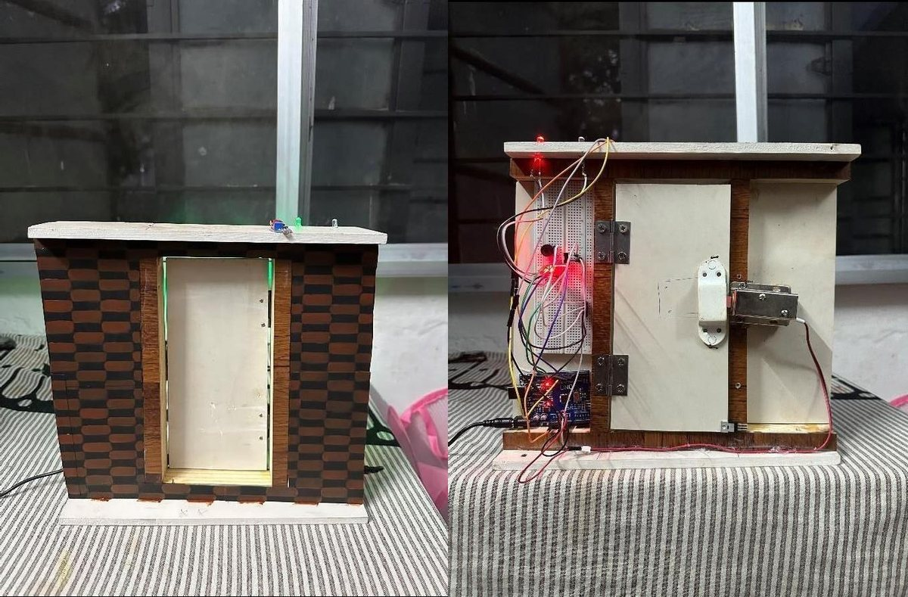

1st place · TECHSCAPE 2024 department exhibition
Unlock a door
with light.
Luminous Link is a Li-Fi smart lock. Your phone flashes a PIN as pulses of light, an Arduino reads them through a light sensor, and a solenoid bolt slides open. No Wi-Fi or Bluetooth signal that can be picked up through a wall.
Transmitter
your phone
Send via
Receiver
virtual lock · PIN 2024
Waiting for light
PIN · 16 bitschecksum
Signal
preamble sets the timing
short = 0 · long = 1
checksum
How it works
-
01
Encode
The PIN becomes 16 bits plus a 4-bit checksum. Each bit is a flash: short for 0, long for 1.
-
02
Flash
A long preamble comes first. The lock measures it to learn the speed, so a fast screen and a slow torch both work.
-
03
Unlock
The Arduino times every pulse, checks the checksum and PIN, then drives the solenoid through a MOSFET. Three wrong PINs lock it for 30 seconds.
Hardware
- Arduino Uno / Nano
- decoder & control
- LDR module (LM393)
- D8 · light sensor
- IRF730 MOSFET
- D12 · switches the 12 V lock
- 12 V solenoid lock
- the bolt
- Green / red LED
- D6 / D11 · open, closed
- Buzzer
- D4 · feedback & alarm
